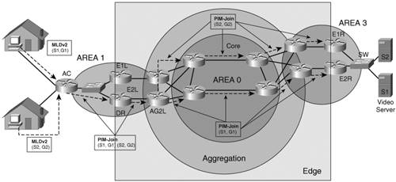
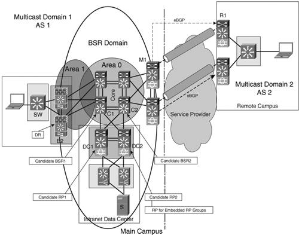

IPv6 Multicast Deployment ExamplesIn this section, the IPv6 multicast concepts discussed so far are applied in the following practical examples:
Descriptions of full-scale IPv6 multicast deployments are presented in Part II of this book. At this point, the goal is to provide a practical sense of how IPv6 multicast is configured and how it works. SSM in a Service Provider NetworkOne of the services that service providers are trying to deploy for their broadband subscribers is video and audio content delivery. The bandwidth available with broadband access is sufficient to support applications such as video (which requires 2-4 Mbps) and audio (which requires 192 kbps). The SP deploys content servers in its data center, and they represent the sources of the streams. Each audio/video channel is a multicast stream identified by a (S,G). Subscribers can use a PC with an installed client application or a set-top box that subscribes to the (S,G) that maps to the channel of interest. The application or the set-top box is configured for this mapping, and it handles the process of joining or leaving the (S,G). All the sources and the group IDs are fixed and known to the subscribers. An SSM deployment best fits such a service model. The multicast protocols used in this example are as follows:
The deployment of this service is presented in the generic topology of an IP service provider shown in Figure 6-7. The network was migrated to dual-stack IPv4/IPv6, and an IPv6 unicast infrastructure is in place. Figure 6-7 shows the subset of routers in this topology used for this example. Figure 6-7. SSM Deployment Example TopologyThe IPv6 IGP is OSPFv3. Two servers are shown in the data center. Two users interested in the content provided by these servers are shown in the access portion of the SP network. The two channels used in this example map to (2001:D:AAAA::1000, FF3A::100) and (2001:D:AAAA:1001, FF3A::101). The SP can choose SSM group addresses without a defined scope, and the multicast traffic is meant to stay only within the provider's network. Enabling IPv6 Multicast RoutingOnly one global command is needed to enable PIM and MDLv2 on all IPv6-enabled router interfaces: AC(config)#ipv6 multicast-routingAll routers that are meant to forward the multicast traffic need to be enabled for IPv6 multicast routing. MLD ConfigurationWith IPv6 multicast routing enabled, the interfaces facing the two subscribers are running MLDv2. If the SP does not want the user to be able to subscribe to groups other than the ones offered through the paid service, FF3A::/96, the SP will enable MLD access control on the user-facing interfaces with the help of the following ACL: AC#show ipv6 access-list IPv6 access list mld-acc-control permit ipv6 any FF3A::/96 sequence 10 MLD access control is enabled on the interface that connects to subscriber 1 via VLAN 100, as highlighted in the interface configuration and interface MLD information listed in Example 6-11. Example 6-11. Interface Configuration and MLD Interface Status for the MLD Access Control Feature
Tuning PIMAll three types of supported PIM are running on the routers shown in Figure 6-7. In principle, with PIM-SSM, no other configuration should be needed. However, the topology of this example offers an opportunity to tune PIM a little bit. Routers AC, E1L, and E2L in Figure 6-7 are all connected via a common, Ethernet broadcast domain. In this case, one router is elected to be a DR (as described in the "Multicast Routing" section of this chapter). The network designer might choose to control the DR election process by modifying the PIM DR priorities. In this example, the intent is to make sure E2L is always the PIM DR for this broadcast domain. The interface configuration and the result of the election can be displayed on E2L (see Example 6-12). Example 6-12. Interface PIM Status Showing the Result of the DR Election Process
The PIM neighbors are kept at a lower DR priority, as shown in Example 6-13. Example 6-13. PIM Neighbor Information as Seen on the Elected DR
Subscriber Joining the (S,G)This section shows what happens when the first subscriber sends an MLDv2 report message and it joins the (S,G) group (2001:D:AAAA:1::1000, FF3A::100). The access router (AC) shows the fact that it has a member of the FF3A::100 group listening on interface GigabitEthernet 0/2.100, as highlighted in Example 6-14. Example 6-14. MLD Membership to Group FF3A::100
The PIM debug is turned on for the FF3A::100 group. The subscriber joining the group triggered a PIM join message to be sent to the PIM DR and up the SPT (2001:D:AAAA:1::1000,FF3A::100), as shown in Example 6-15. Example 6-15. Output of IPv6 PIM Debug for Group FF3A::100
After the second subscriber joins (S2,G2), at the AC router the PIM topology looks like Example 6-16. Example 6-16. IPv6 PIM Topology on Router AC
The PIM topology will look similar throughout the rest of the network. It is interesting, however, to observe it at a node that has two equal-cost paths to the source. This is the case with the AG2L router (see Example 6-17). Example 6-17. PIM Topology on a Node with Two Equal-Cost Paths to the Multicast Source
In this case, it is expected that (S1,G1) and (S2,G2) are balanced, as shown in Figure 6-7, based on the path of the PIM join messages. The PIM topology does indeed reflect this per-source balancing. The output of show ipv6 pim topology indicates that one group's traffic is received over interface GigabitEthernet0/1 and the other's over GigabitEthernet0/2, as highlighted in Example 6-18. Example 6-18. PIM Topology with Redundant Paths to the Multicast Source
IPv6 Multicast Traffic ForwardingWhen the sources start transmitting the multicast traffic, you can monitor its forwarding via the MFIB counters, as shown below for AG2L in Example 6-19. Example 6-19. IPv6 Multicast Forwarding Information Based on MFIB Counters
This output indicates that the subscribers are enjoying the content they expressed interest in. The SSM-based service is deployed with little configuration, and it is easy to manage. ASM in an Enterprise NetworkFor the ASM deployment example, the topology chosen is that of an enterprise network (EN). Typical applications deployed in an EN are videoconferencing, remote learning, distribution of information and news, and collaborative tools. The servers supporting all the corporate applications are located in data centers that are distributed across the network. This makes the deployment more suitable as an ASM model. To describe an ASM-based deployment, a subset of routers was selected from an EN example topology, as shown in Figure 6-8. The network diagram in Figure 6-8 depicts two topological elements: the main campus and a remote office. Figure 6-8. ASM Deployment Example TopologyThe following protocols are used to support the multicast services:
As far as routing is concerned, OSPFv3 is used in the main campus, and eBGP is used to exchange routing information with the remote offices. One PIM domain spans the entire network, but BSR flooding is contained within the main campus network. The setup steps and information common to both the ASM and the SSM examples are not explicitly presented here. All routers that have to support the service should be enabled for IPv6 multicast routing. Configuring BSRIn the main campus shown in Figure 6-8, at least two PIM RPs have to be configured to avoid downtime in case of RP failure. Multiple RPs deployed in a PIM domain require a mechanism that informs routers as to which RP serves a given group. BSR has been selected for this example to provide dynamic RP-to-group mapping and RP redundancy. Router C1 and C2 in the core of the network are set to be candidate BSRs, as highlighted in the configuration in Example 6-20. Example 6-20. BSR Configuration of Two Candidate Routers
The two routers go through the BSR election process, at the end of which C1 becomes the BSR because of its configured higher priority. The result of the BSR election process is highlighted in the output of show ipv6 pim bsr election shown in Example 6-21. Example 6-21. Outcome of the BSR Election Process
The intent is to run BSR only within the main campus. To contain the BSR flooding within the main campus, the M1 interface for the link to the remote site is configured to drop the BSR traffic with the Cisco IOS command ipv6 pim bsr border. Configuring Candidate RP routersWith the BSR infrastructure in place, it is time to enable several routers to advertise their willingness to be RP for certain multicast groups. For this example, routers DC1 and DC2 in the data center are set up as candidate RPs for the groups FF08::1:xxxx/112 identified via ACL bsr-group. This is implemented with the global configuration command shown on router DC1 along with the ACL (see Example 6-22). Example 6-22. BSR Configuration and Status of a Candidate RP Router
In this example, the RPs are identified by their interface addresses on the same network with the multicast servers: 2001:D:AAAA:1::1 (for DC1) and 2001:D:AAAA:1::2 (for DC2). The same group address range is covered by both RPs, which provides a level of redundancy for the deployment. If one of the RPs goes away, the BSR does not advertise it anymore. The elected BSR learns about all candidate RPs highlighted in Example 6-23. Example 6-23. List of RPs Advertised via BSR
Then it distributes the RP-to-group mapping information throughout the entire main campus network. The B2 edge router learns the BSR and RP-to-group mapping information, and it can be viewed in the output of show ipv6 pim group-map (see Example 6-24). Example 6-24. RP-to-Group Mapping Information Learned by a Router via BSR
The routers enabled for multicast routing throughout the PIM domain create a virtual tunnel for the known active RPs. They use this interface to register directly connected sources. Example 6-25 shows the tunnel built by router C1 to the RP. Example 6-25. Tunnel Built by C1 to the RP for Registration Purposes
The main campus is now ready to support multicast traffic for groups FF08::1:xxxx using RP 2001:D:AAAA:1::1. PIM Topology and Traffic ForwardingThe FF08::1:100 multicast group is used to exemplify the operation of the main campus multicast network. Suppose the users join groups, as shown in Example 6-26 for interface GigabitEthernet0/2.100, but there are no registered sources yet. Example 6-26. IPv6 MLD Registration State When No Sources Are Registered
Because there are no sources, the only information available in the PIM topology is that of the ST (*, FF08::1:100) highlighted in Example 6-27. Example 6-27. PIM Topology When No Sources Are Registered
As soon as a source 2001:D:AAAA:1::1000 registers for this group, an (S,G) SPT is built for it, as shown by the highlighted output in the new PIM topology output in Example 6-28. Example 6-28. PIM Topology When a Source Registered
The MFIB counters indicate the traffic is flowing from the source to the listener over the (2001:D:AAAA:1::1000,FF08::1:100) SPT. Operation with Embedded RPMP-BGP offers the means to exchange routing information between the campuses. Because in this example BSR flooding was stopped at the boundary between them, embedded RP is used for RP-to-group mapping. For all multicast applications that span the entire network, the multicast group addresses used should contain the address of the RP based on the format described earlier in the "Embedded RP" section. You must statically configure the router embedded in the multicast group address to be an RP. For this example, the router chosen to be RP for embedded RP groups is DC2. DC2 is set to be an RP with the following global configuration command ipv6 pim rp-address 2001:D:AAAA:1::2Following the procedure described earlier in the chapter, an embedded group address for this RP is FF78:240:2001:D:AAAA:1:0:100. When a subscriber in the remote campus joins the group, the RP-to-group mapping is learned from the multicast address. This mapping is highlighted in the output of show ipv6 pim group-map on the R1 router in Example 6-29. Example 6-29. RP-to-Group Mapping with Embedded RP
When a source is present for the group, the (S,G) is built for the traffic. Both (S,G) and (*,G) groups can be now seen highlighted in the PIM topology (Example 6-30). Example 6-30. PIM Topology with a Registered Source for the Embedded RP Group
The tree topology in the preceding example shows an empty immediate OIL for (2001:D:AAAA:1::1000, FF78:240:2001:D:AAAA:1:0:100). This is because the router did not receive any PIM joins or MLD reports for the (S,G), the events that generate entries in the immediate OIL. On the other hand, from a forwarding perspective, the MRIB shows outbound interfaces for the (S,G), as highlighted in the output of show ipv6 mrib route in Example 6-31. These are inherited by the (S,G) from the (*,G). Example 6-31. Forwarding Information for the Embedded RP Multicast Group
The IPv6 routing information is exchanged between the main campus and the remote offices via eBGP. In this network example, it was chosen to advertise the source prefix (2001:D:AAAA:1::/64) only for multicast use via the multicast IPv6 address family. The output in Example 6-32 shows the prefix advertised within the BGP multicast address family but not present in the IPv6 unicast routing table. Example 6-32. IPv6 Prefix Advertised by BGP for Multicast Only
The prefix is available for multicast but not for unicast routing. Note It is important to note here that with the 2001:D:AAAA:1:: advertised as a multicast route only, the listeners in the remote campus will be able to join and receive traffic from sources in the main campus. On the other hand, because these routers do not have a unicast IPv6 route to the RP (2001:D:AAAA:1::2), they will not be able to bring up their tunnel interface to the RP. Because of this, the routers in the remote campus will not be able to register any sources with the RP. The deployment examples discussed in the last two sections show IPv6 as an apt successor of its IPv4 predecessor in terms of offering multicast services. IPv6 builds on the successes of IPv4, and it ignores its failures. Except for a few details, there are no major differences between the two multicast implementations. IPv6's advantage consists of its larger addressing space, its address scoping, and a hindsight perspective on protocol selection. IPv6 multicast has reached a level of maturity that makes it ready for large-scale deployments in both ASM and SSM models. The only scenario for which IPv6 does not have a complete solution at this time is that of a multidomain deployment. It currently has no mechanism in place to exchange source information between PIM domains. This drawback represents one area of the IPv6 protocol that will likely see further development. |
 Router AC joined the (S,G) SPT
IPv6 PIM: (2001:D:AAAA:1::1000,FF3A::100) GigabitEthernet0/2.100 Start being last hop
Router AC joined the (S,G) SPT
IPv6 PIM: (2001:D:AAAA:1::1000,FF3A::100) GigabitEthernet0/2.100 Start being last hop